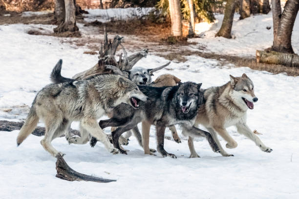

{kind=link}
Sponsor One of Our Permanent Residents!
Maybe you've wanted an exotic animal in your life, you've realized that they don't make great traditional pets.
Maybe you just love our mission here at Arctic Fox Daily and want to support us in a quiet - yet very important - way.
Well, this a unique opportunity for you to be invested in an individual animal's life, and to know that you're making a difference!
How exactly does my donation help?
Your sponsor donation helps cover some of the costs of basic necessities for these animals. We have routine expenses for that include a varied diet, monthly internal and external parasite prevention, bedding and cleaning supplies, enrichment supplies, and more. If we have a month where we receive extra donations, we set aside funds in our savings account, to be used for medical emergencies or project expenses. In short, you help us give these animals the best lives possible!
What exactly does sponsorship entail?
A resident animal will only have one primary sponsor. They may have up to three co sponsors.We ask that you please commit to our 6-month term of sponsorship. Sponsors are our only form of "reliable income" that we have at our nonprofit, so committing to a full term is extremely helpful.
Sponsorship donations will be due between the 1st and 5th of each month, and need to be set up as recurring, monthly donations through our PayPal. (Once you submit the form below, we will send you an email once there is an open spot to sponsor your desired resident, and a link to set up the recurring donation).
In addition to knowing that you're helping the life of one of these beautiful creatures, and helping our rescue thrive, as a sponsor, you...
- Are contacted regarding major medical or life updates pertaining to your sponsored resident
- Are mentioned when your sponsored resident is posted on Instagram (if you provide us with your IG handle and do NOT check the box to remain anonymous on your sponsor application)
- Can schedule a private tour of our facility. Tours usually last approximately 30-60 minutes.
Perk for Primary Sponsors: We try to send out a unique, physical gift at least once per year. Please note that a variety of factors influence when we send out these gifts, so if you do not sponsor long term, we cannot guarantee that this will line up with when we send out that year's physical gift.